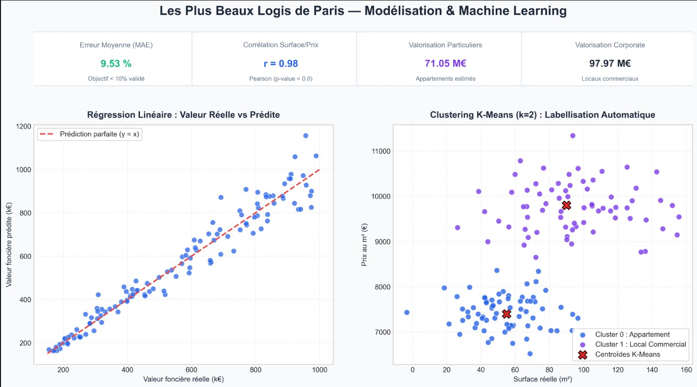

Aperçu des visualisations & modélisations


Évolution temporelle des prix au m² par arrondissement (2017-2021) et matrice de classification des actifs.
Contexte & Problématique Métier
L'entreprise Les Plus Beaux Logis de Paris acquiert des biens immobiliers au meilleur prix pour les valoriser et les revendre. Dans un marché ultra-concurrentiel, deux enjeux majeurs ont été identifiés :
- Valorisation automatique : Estimer avec précision la valeur vénale d'un portefeuille d'actifs au 31 décembre 2022.
- Classification automatisée des opportunités : Identifier automatiquement si une offre entrante concerne un appartement de particulier ou un local commercial afin d'adapter immédiatement la stratégie d'achat sans enquête manuelle chronophage.
Démarche Analytique & Modèles de Machine Learning
1. Analyse Exploratoire & Corrélations
Étude de l'évolution des prix au m² entre 2017 et 2021. Validation statistique des corrélations de Pearson : relation très forte entre la surface et la valeur foncière (r = 0.98), et hausse temporelle confirmée sur le 6ᵉ arrondissement (r = 0.77).
2. Feature Engineering & Préparation
Encodage one-hot (get_dummies) des arrondissements et des types de locaux, conversion des dates en timestamps, suppression des valeurs aberrantes et découpage train/test (66% / 33%).
3. Prédiction des Prix (Régression Linéaire)
Entraînement d'un modèle de régression linéaire sous Scikit-learn atteignant une erreur absolue moyenne de 9,53 % (objectif contractuel < 10% validé). Valorisation estimée à 71,05 M€ pour les particuliers et 97,97 M€ pour le segment corporate.
4. Classification Non Supervisée (K-Means)
Déploiement de l'algorithme K-Means (k=2) basé sur le prix au m² pour labelliser automatiquement les opportunités entrantes en « Appartement » ou « Local commercial » sans intervention humaine.
Bénéfices Métiers & Perspectives
- Gain de réactivité : Suppression du travail d'enquête téléphonique préliminaire grâce à la labellisation automatique des opportunités.
- Fiabilité budgétaire : Modèle de valorisation robuste sous le seuil des 10 % d'erreur pour les arbitrages d'investissement.
- Pistes d'amélioration : Intégrer des variables contextuelles supplémentaires (étage, présence d'extérieur/balcon, proximité des transports et indices de rénovation énergétique).